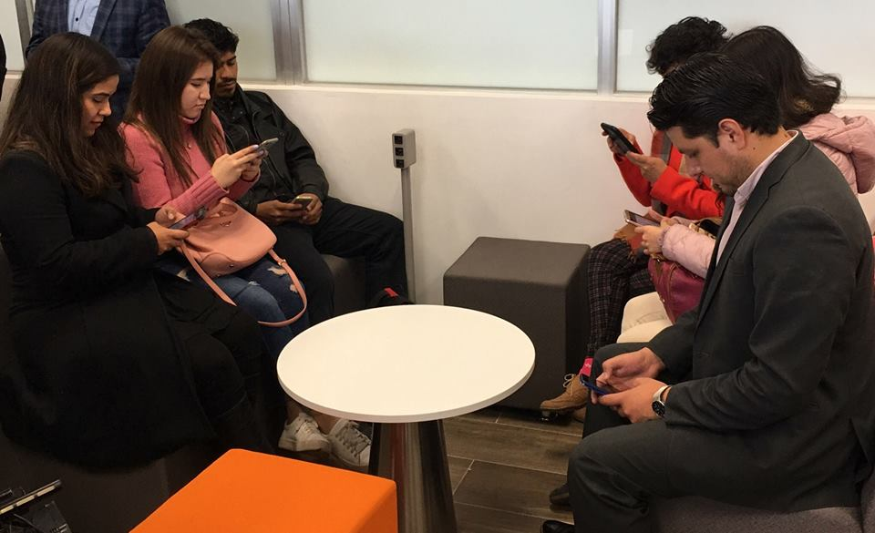
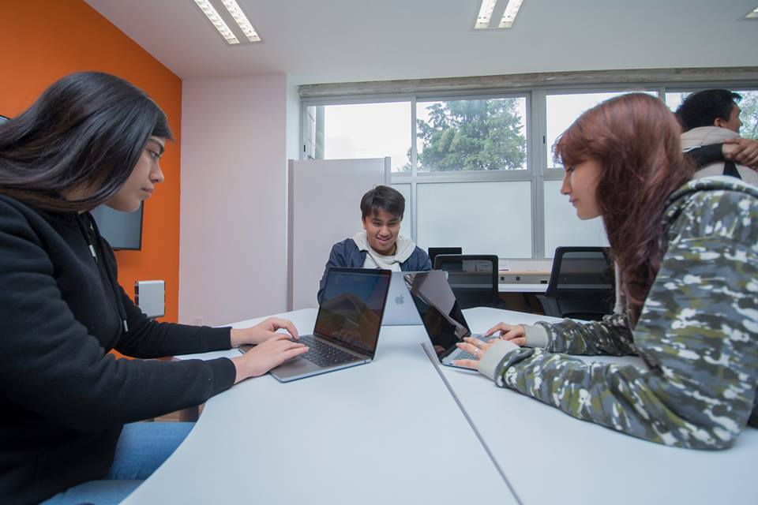

¿Qué es el CEDAM?
El Centro de Desarrollo de Aplicaciones Móviles (CEDAM) ubicado en la planta baja del edificio A-15 en la FES Acatlán es un laboratorio en el que podrás aprender a desarrollar aplicaciones móviles para sistemas iOS.
¿Quién puede entrar?
Toda nuestra comunidad es bienvenida, nuestro objetivo es compartir el conocimiento sobre el desarrollo de aplicaciones móviles iOS, si quieres desarrollar una aplicación acercate a los integrantes del equipo CEDAM y con gusto podremos ayudarte a volver realidad esa idea.
¿Cómo puedo participar?
Si quieres formar parte de un taller o curso específico siguenos en Facebook y ahí podrás encontrar información acerca de las convocatorias, fechas e inscripciones de los talleres.
Encuesta de calidad.
Nos interesa conocer tu estancia en el laboratorio te pedimos ingresar en el siguiente link. De esta manera podemos mejorar tu experiencia en el laboratorio. Encuesta
Cursos
Se impartirán cursos relacionados con la programación para toda nuestra comunidad.
Open Lab
Es una modalidad en la que puedes aprender a programar de manera autodidacta.
Avisos
Calendario
Lineamientos
Artículo 1. Se consideran Aulas de Cómputo los espacios físicos ubicados en los salones A-111, A-421, A-723 y A-1501, así como los recursos de hardware, software, conectividad y mobiliario ubicados en el interior de las salas antes mencionadas, que la FES Acatlán ofrece como apoyo a las actividades de enseñanza/aprendizaje.
Artículo 2. Se consideran cinco tipos de usuarios de las Aulas de Cómputo a) estudiantes que se encuentren matriculados; b) profesores, coordinadores y directivos; c) empleados de la institución cuya vinculación con la FES Acatlán se encuentre vigente; d) externos; y e) usuarios diferentes a los anteriores (capacitaciones específicas, cursos de educación continua, etc.).
Artículo 3. La institución ofrecerá a los usuarios de las Aulas de Cómputo los recursos de hardware, software, conectividad y mobiliario disponibles, para que sirvan como apoyo en sus actividades académicas. El uso académico tiene prioridad sobre cualquier otra actividad.
Artículo 4. La administración de los recursos de las Aulas de Cómputo es responsabilidad del Programa de Matemáticas Aplicadas y Computación (MAC) en conjunción con el Centro de Desarrollo Tecnológico (CeDeTec) de la FES Acatlán. Las Aulas de Cómputo deben estar en todo momento bajo la responsabilidad del Coordinador del Programa de MAC, o de un docente o del encargado del Aula designado por la División de Matemáticas e Ingeniería.
Artículo 5. Todos los usuarios deben contar con autorización de la División de Matemáticas e Ingeniería o del Programa de MAC, de Actuaría o de Ingeniería para hacer uso de las Aulas de Cómputo en el horario de lunes a viernes de 09:00 a 21:00 horas (para hacer uso de las instalaciones fuera del horario antes mencionado deberá solicitarse por escrito al Programa de MAC, instancia que emitirá la resolución en un periodo no mayor a tres días).
Artículo 6. La utilización por parte de los usuarios de las Aulas de Cómputo se hará de acuerdo con las condiciones establecidas en el presente reglamento.
Artículo 6. Los usuarios únicamente pueden utilizar los servicios para los cuales están autorizados; de lo contrario, no se permitirá: el acceso directo a los equipos y servidores.
Artículo 7. Bajo ninguna circunstancia se podrá utilizar el nombre (login) o clave de acceso (password) de otro usuario. Cada usuario debe permitir su plena identificación en la Red Institucional.
Artículo 8. Los usuarios de los recursos de las Aulas de Cómputo, deben tener presente que sus acciones pueden afectar a la institución y a otros usuarios. Un usuario no podrá interferir en los procesos computacionales de la Institución con acciones deliberadas que puedan afectar el desempeño y seguridad de los recursos informáticos o de la información.
Artículo 9. Las clases que requieran el uso permanente de un Aula de Cómputo durante todo el periodo académico lectivo, serán solicitadas directamente por el jefe de Programa o por el Jefe de Sección académico y se asignarán en el orden riguroso a la recepción de dicha solicitud, dando preferencia a las asignaturas en las que se trabaja con integración de las TIC.
Artículo 10. El uso de las Aulas de Cómputo y de los servicios de Red es para fines exclusivamente académicos. Está prohibido usar los equipos de las Aulas y los servicios de Red para jugar, enviar o recibir información pornográfica o de propósito netamente comercial. Por comodidad de los usuarios, sólo se permite el uso simultáneo de un computador a un máximo de dos (2) personas.
Artículo 11. La utilización de los recursos de las Aulas de Cómputo en horario diferente al escolar debe estar debidamente autorizadas por el personal administrativo de la FES Acatlán.
Artículo 12. En caso de pérdida, daño o deterioro de los equipos utilizados, el usuario debe reportar inmediatamente esta situación al encargado de la Sala para proceder a su reparación. Si se determina que el daño fue causado por mal manejo o maltrato del equipo, el usuario responsable debe encargarse de la reparación o nueva adquisición del mismo.
Artículo 13. Son deberes de los usuarios:
1. Reservar las salas con al menos una semana de anticipación, de conformidad con las políticas establecidas por la División de Matemáticas e Ingeniería y por el Programa de MAC. La asignación de equipos se ajustará a la disponibilidad de equipos y a la atención de los usos prioritarios de las Aulas.
2. El docente o responsable de una clase no debe abandonar en ningún momento el Aula de Cómputo sin dar aviso previo al encargado de la misma.
3. En caso de requerir algún software especial, el profesor debe solicitar por escrito a su jefatura la instalación con al menos una semana de anticipación, indicando en cuántos y en cuáles equipos del Aula de Cómputo se requiere.
4. Cumplir puntualmente con los horarios de servicio establecidos para trabajar en las Aulas de Cómputo.
5. Cuidar que se haga buen uso de los recursos de hardware, de software y de mobiliario que se encuentran disponibles en las Aulas de Cómputo.
6. Informar inmediatamente al encargado de la sala sobre cualquier irregularidad en el funcionamiento del equipo asignado (hardware, software o conectividad).
7. Acatar las instrucciones y procedimientos especiales establecidos por la División de Matemáticas e Ingeniería y el Programa de MAC para hacer uso de los recursos de las Aulas de Cómputo.
8. Abstenerse de fumar y consumir alimentos y/o bebidas al interior de las Aulas de Cómputo.
9. Mantener la disciplina y no interferir con el trabajo de los demás usuarios de las Aulas de Cómputo.
10. Los estudiantes que requieran salir del Aula durante la clase, deberán solicitar autorización al profesor que esté a cargo en ese momento.
11. Abstenerse de recibir visitas ajenas a la clase durante la estancia en las Aulas de Cómputo.
12. Procurar el debido orden, limpieza y cuidado de los equipos al terminar el uso, esto incluye apagar los equipos adecuadamente, dejar el espacio de trabajo limpio y ordenado.
13. En el caso de práctica de grupo, el profesor debe responder por el cuidado general y el buen manejo de la sala y sus equipos durante la clase.
14. Almacenar correctamente su información y hacerlo únicamente en las carpetas destinadas para ese fin (no utilizar los equipos para almacenar información personal ajena al interés académico).
15. Cuidar sus objetos personales, ya que los encargados de las Aulas de Cómputo no se hacen responsables por la pérdida de los mismos.
16. Esta prohibido ingresar animales a las Aulas de Cómputo.
17. No se autoriza compilar y ejecutar programas de dominio público cuya función sea obtener privilegios mayores a los asignados.
Artículo 14. Son derechos de los usuarios:
1. Recibir trato respetuoso por parte del personal a cargo del Aula de Cómputo.
2. Recibir asistencia técnica en cuanto a hardware, software y conectividad se refiera, de acuerdo con las disposiciones definidas por el Programa de MAC y CeDeTec.
3. Disponer de equipos en pleno funcionamiento en las Aulas de Cómputo.
4. Hacer uso del hardware, software y conectividad durante el tiempo que se le haya designado.
Artículo 15. Los equipos de Informática (proyectores de video, bocinas, adaptadores etc.) sólo se prestan para usarse dentro de las instalaciones de la FES Acatlán, cualquier excepción debe ser autorizada directamente por la División de Matemáticas e Ingeniería o por el Programa de MAC. El préstamo a estudiantes, de cualquier equipo, deberá autorizarse a través de un docente que asumirá la responsabilidad solidaria.
Artículo 18. Son causa de sanción las siguientes acciones:
1. Utilizar los recursos de las Aulas de Cómputo para fines no académicos, tales como, navegar en páginas no autorizadas, reenviar cadenas de correo electrónico, reproducir videos o música cuando estos no sean parte de una clase, etc.
2. No denunciar a otros usuarios que estén utilizando los recursos de las Aulas de Cómputo para fines no académicos.
3. Utilizar el código de acceso de otro(s) usuario(s) sin la debida autorización.
4. Violar o intentar violar los sistemas de seguridad de máquinas locales o remotas.
5. Perturbar el trabajo de otros usuarios con comportamientos interferentes.
6. No respetar los horarios de servicio establecidos en el artículo 5.
7. Desacatar alguna de las normas básicas para la utilización de las Aulas de Cómputo descritas en el Capítulo II del presente.
8. Incumplir alguno de los deberes enumerados en el Artículo 13 del presente.
9. Desacatar los procedimientos establecidos por la División de Matemáticas e Ingeniería y el Programa de MAC para el uso de las Aulas de Cómputo.
10. Robar o cambiar equipos, partes o componentes de la dotación de hardware, software y conectividad de las Aulas de Cómputo.
11. Utilizar Chats, IRC y programas de comunicación en tiempo real, sin la debida autorización y sin la presencia de un profesor.
12. Ejecutar juegos de video de cualquier tipo, sin la debida autorización y sin la presencia de un profesor; esto aplica también para juegos en línea o de red.
13. Descargar o reproducir archivos de video o de audio, sin la debida autorización y sin la supervisión de un profesor.
14. Descargar cualquier software de Internet, sin la debida autorización y sin la supervisión de un profesor.
15. Instalar o desinstalar software en equipos y servidores de las Aulas de Cómputo, sin la debida autorización y sin la presencia de un profesor.
16. En calidad de profesor, desatender el Aula de Cómputo después de haber autorizado a algún usuario para realizar las acciones contempladas en los puntos 11 al 15 del presente Artículo.
17. Maltrato deliberado a los recursos de las Aulas de Cómputo.
18. Modificar la configuración de los equipos, así como alterar el software instalado en los mismos.
19. Borrar archivos de otros usuarios.
20. Infectar, de manera intencional, los computadores con Virus, Spyware o Malware.
21. Alterar o dañar las etiquetas de identificación o de inventario de cualquier equipo o mobiliario.
22. Mover equipo o mobiliario de un lugar a otro o de un área a otra.
Artículo 19. La FES Acatlán podrá imponer a los usuarios que incurran en algunas de las acciones enumeradas en el Artículo 18 del presente, las siguientes sanciones:
1. Amonestación verbal. Será impuesta por el encargado de la Sala de Informática, dependiendo de la gravedad de la falta.
2. Amonestación escrita. La harán el jefe de la División de Matemáticas e Ingeniería o el jefe de Programa de Matemáticas Aplicadas y Computación mediante comunicación escrita, de la cual quedará copia en la hoja de vida del usuario.
3. Suspensión de clases por uno o más días a usuarios en calidad de estudiantes. La impondrá el Director de la FES Acatlán a solicitud del jefe de la División de Matemáticas e Ingeniería o del jefe de Programa de Matemáticas Aplicadas y Computación.
4. Matricula condicional a usuarios en calidad de estudiantes. La impondrá el Director, dependiendo de la gravedad de la falta.
5. Cancelación temporal. Será impuesta a los usuarios externos y tipo e (Artículo 2) por el encargado del Aula de Cómputo respectiva, dependiendo de la gravedad de la falta.
Artículo 20. El procedimiento para la aplicación de las sanciones mencionadas a los estudiantes, se regirá por las normas y lineamientos de la Universidad.
Artículo 21. Cualquier situación no prevista en el presente, la resolverá la División de Matemáticas e Ingeniería junto con el Programa de MAC de acuerdo con las normas y lineamientos de la Universidad.
Notas aclaratorias. Dada la naturaleza del presente, su conocimiento y cumplimiento son obligatorios para todos los usuarios del equipo de cómputo. Su desconocimiento no podrá ser utilizado como excusa para evitar las sanciones correspondientes.
Las Aulas de Cómputo son monitoreadas con el objeto de supervisar la seguridad de los equipos.
Las sugerencias o inconformidades con respecto a las instalaciones del laboratorio o el comportamiento del personal de este, deberán ser entregadas por escrito en la Jefatura del Programa de Matemáticas Aplicadas y Computación (edificio A2, planta baja) o en la División de Matemáticas e Ingeniería (edificio de Seminarios, planta alta).